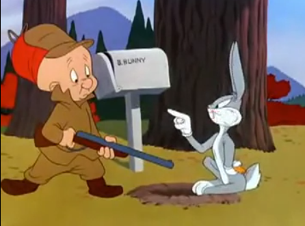

Portfolio
I believe that programmers should have an approach to programming that does not simply include the technical skills involved in most software engineering work, but an eye for design, art, and a creativity that allows them to push the boundaries of the tools they master. As such, I am not only a computer science major but an Integrated Digital Media minor. Attached is some of the best work I have done in my minor.

This is a final project I created in Reaper for my Audio Foundations class. I tried to sync audio with the footage from a famous Looney Toons cartoon "Rabbit Fire". The original scene is pretty funny, but I always wondered how Elmer Fudd understood them, and, assuming that he did, what their interactions would sound like to an outsider. The most important part of this was replacing the dialogue between Bugs and Daffy with recordings of real life bunnies and ducks. Some of the audio used was re-timed and re-pitched to fit a character’s expression or to sync the noises to its mouth. I also redid the original sound effects, updating them slightly and using sounds that I thought would fit with the cartoonish violence.